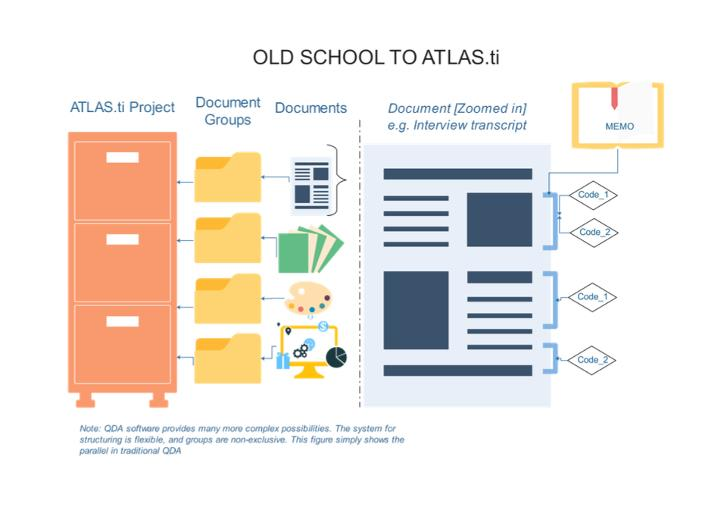

From Carbon Paper to Code: Crafting Sociology in an Age of AI
December 10, 2024
Since ChatGPT launched in 2022, AI has become inescapable. Sociologists warn an “algorithmic society” risks deepening inequalities in finance, healthcare, and science, yet others see potential for imaginative uses that benefit society. Are data streams and chatbots the new iron cage? Can sociologists, especially qualitative researchers, make these tools work for social insight?
Lessons from History’s Filing Cabinet
Though C. Wright Mills’s The Sociological Imagination predates AI, the appendix offers timeless insights on using structured systems to repurpose technology for sociology. Mills leveraged filing cabinets, folders, and carbon paper—not just as storage but as tools for organizing, revisiting, and rearranging ideas. He even recommended emptying files on the floor to regroup them, denaturalizing categories and inviting new perspectives. As a graduate student, I was struck by Mills’s pragmatic, subversive approach. His craftwork provided an alternative to “grand theories” that framed segregated America as history’s peak and “abstracted empiricism” that measured what was convenient, not what was crucial.

Just as filing cabinets can be repurposed for sociological purposes, so can computation. For nearly two decades, I have used Mills’s “file” to introduce qualitative data analysis to qualitative colleagues, survey researchers, and students puzzled by sociology’s methodological distinctions. I always emphasize the pragmatic repurposing of technology, given varied goals and a commitment to methodological pluralism (even within approaches). The added value of computation, for me, is found in possibilities for machine-readable datasets, flexible indexing, error reduction, and posterity—the ability to archive, revisit, and perhaps one day share in-depth data in an interactive way. I believe that rather than just reproducing “best practices” and past failures, technology can be repurposed with imagination.
Sociologists today are combining computational social science, AI, statistical methods, and traditionally qualitative methods in creative ways. Before ChatGPT became a household name, my teams began experimenting with machine learning for large-scale comparative ethnographic projects. We weren’t just trying to increase efficiency; we aimed for greater accuracy, verifiability, and triangulation. The results were positive: machine learning helped uncover biases in our human coding, link multi-year patterns to individual interactions, and visualize patterns described in narratives.
During the pandemic, and while sidelined from the field, we revisited 12,000 pages of human-coded interview and participant observation data from our prior research on terminal illness. We trained a language model (BERT) on our coding, then combined machine classifications with in-depth qualitative analysis to identify patterns and address new questions. By recoding descriptions of experiences with disease from the first symptoms onward, we identified important strategies for approaching advanced cancer that were obscured in prior coding. This process of re-arranging data with the assistance of computational power mirrors Mills’s analog example 70 years ago.
While I offer examples I’ve worked with personally, I am not alone in leveraging technology for engaged sociology. Initiatives like the American Voices Project are offering a testing ground for others interested in the possibilities of pushing the boundaries of traditionally qualitative work. My team argued that “big” qualitative data are useful as a distinct research genre that enables the linking of personal narratives to broader societal inequities and connecting history and biography in an examination of social suffering. Dozens of teams examined salient empirical topics, and initial works have already enabled important discussions about the possibilities and limits of opening qualitative data for public use.
Crafting Sociology with Purpose
Mills’s appendix remains insightful in an era of technological hype and hope. The core lesson—that well-developed systems can enable rigorous creativity—is still relevant, even as our tools evolve.
Yet there’s a caution. Decades after reading The Sociological Imagination, the striking parallels between Mills’s approach and the foundational work of W.E.B. Du Bois hit me. Du Bois also championed a critical, engaged, and empirically grounded sociology, emphasizing the enduring value of data for future generations. Although Mills perpetuated his era’s neglect of Du Bois, he still helped advance the field in ways that aligned with Du Bois’s vision. The underlying lesson isn’t just about distinguishing technologies broadly labeled as “AI” or warning against the dangers of complacency. Rather, a review of sociology’s own “file” reminds us that social inquiry is fraught and imperfect, as are its practitioners. The dangers of erasure, abstracted empiricism, and “grand” theory remain unremitting, even among our most venerated. Vigilance and continual reflection on our toolkit are always necessary, though never sufficient because the task of crafting sociology has never been more consequential—or more precarious.
Acknowledgments: I would like to thank James Elliot for a conversation on Mills’s piece which inspired this post. I would also like to acknowledge my collaborators (especially the Medical Cultures Lab), the American Voices Project (which provided an opportunity to work on issues discussed here), and the speakers at the American Sociological Association Webinar on Trends in Mixed Methods Research for valuable contributions reflected in this work.
Corey M. Abramson is in the Department of Sociology at Rice University. His research examines connections between inequality, health, and culture.